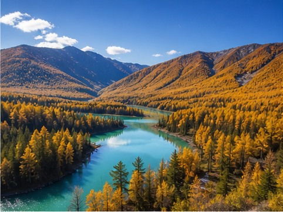
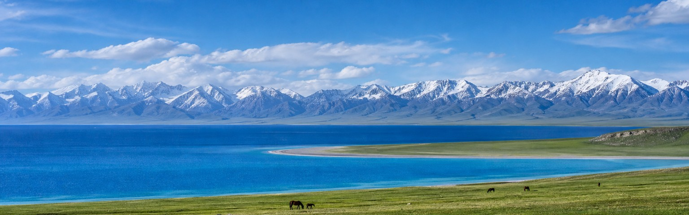
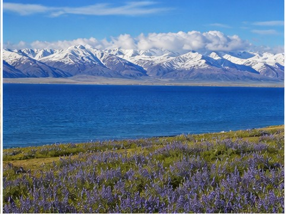
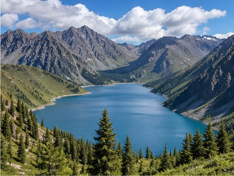
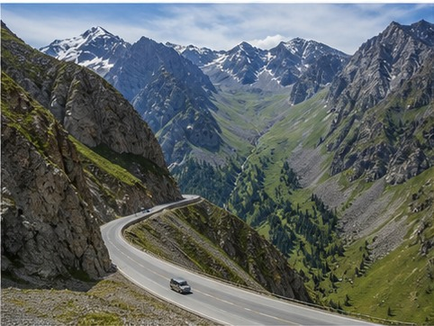
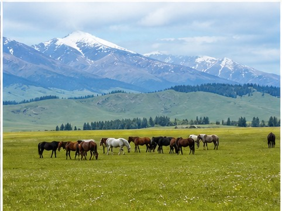
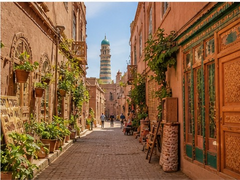
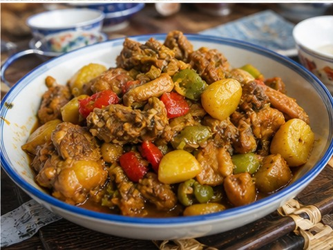

01
Kanas Lake
Forest, alpine water, and Xinjiang’s celebrated autumn color.

A continent within China
Covering roughly one-sixth of China, Xinjiang holds snow mountains, grasslands, deserts, blue lakes, forests, and Silk Road cities within one immense region. The terrain can change completely in a single driving day, while the cultures and food reflect centuries of movement between East and Central Asia.
Xinjiang rewards travelers who accept distance rather than fight it. Kanas, Sayram Lake, the Duku Highway, Nalati, Hemu, and Kashgar cannot all be treated like nearby attractions. A strong route follows the season and chooses either northern landscapes, southern Silk Road culture, or enough time to connect both properly.
01
Start here

Forest, alpine water, and Xinjiang’s celebrated autumn color.

A vast blue lake framed by snow peaks and grassland.

An accessible alpine lake beneath the Tianshan range.

A seasonal mountain road crossing several climate zones.

Open valleys, horses, and long summer light.

A living Silk Road city with lanes, workshops, and markets.
02
Eat like a local

03
Recommended time
Seven to ten days suit a focused northern circuit; combining north and south needs closer to two weeks.
Get ItineraryChoose one compact northern loop around Sayram Lake, Nalati, and seasonal road access.
Add Kanas and Hemu with realistic driving days and weather flexibility.
Connect a northern landscape route with Kashgar and the south by flight instead of adding endless road time.
Your Xinjiang, made clearer
Tell us your travel month, route priorities, and comfort with long drives. We’ll design Xinjiang around season and distance, not just a list of photos.
Start With Your Xinjiang Trip